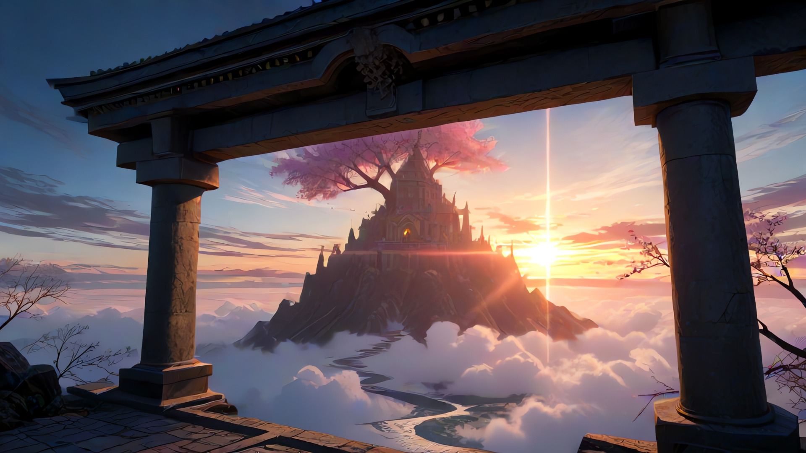
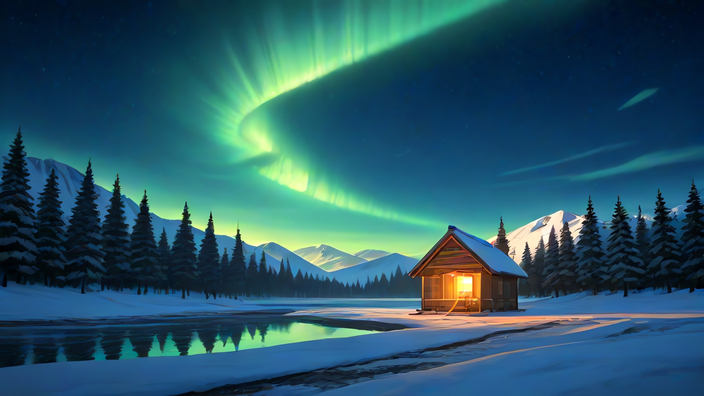
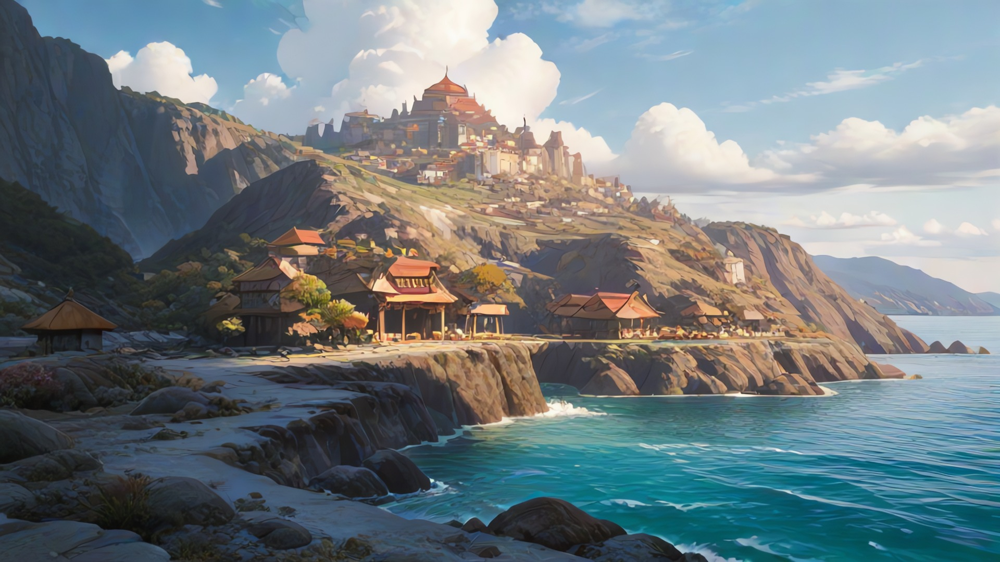
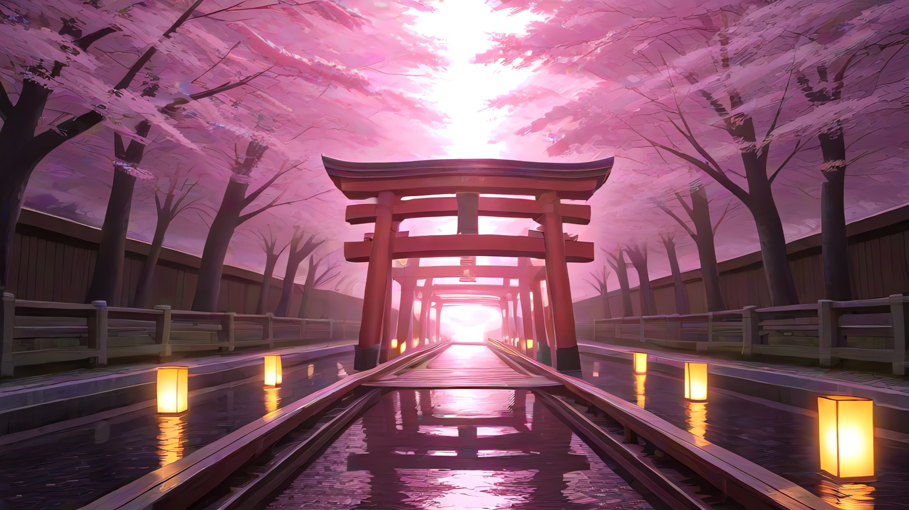
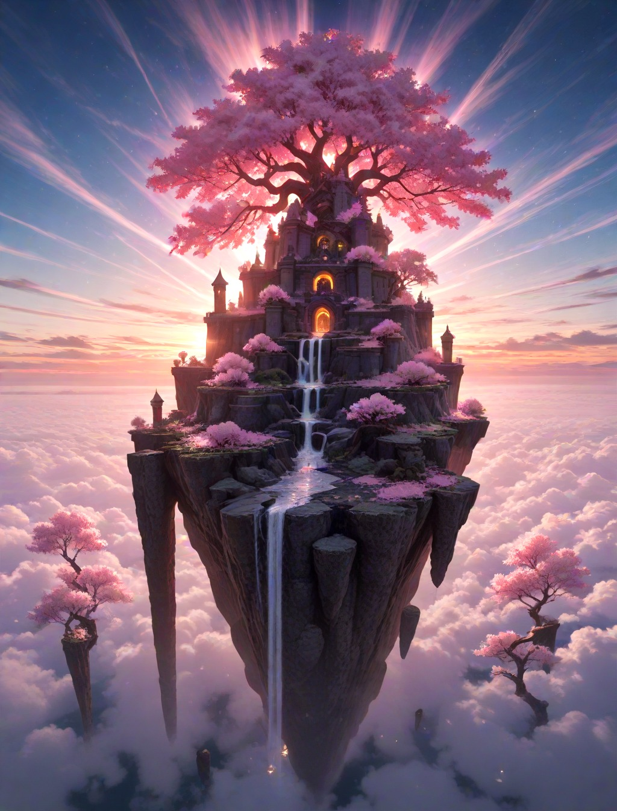
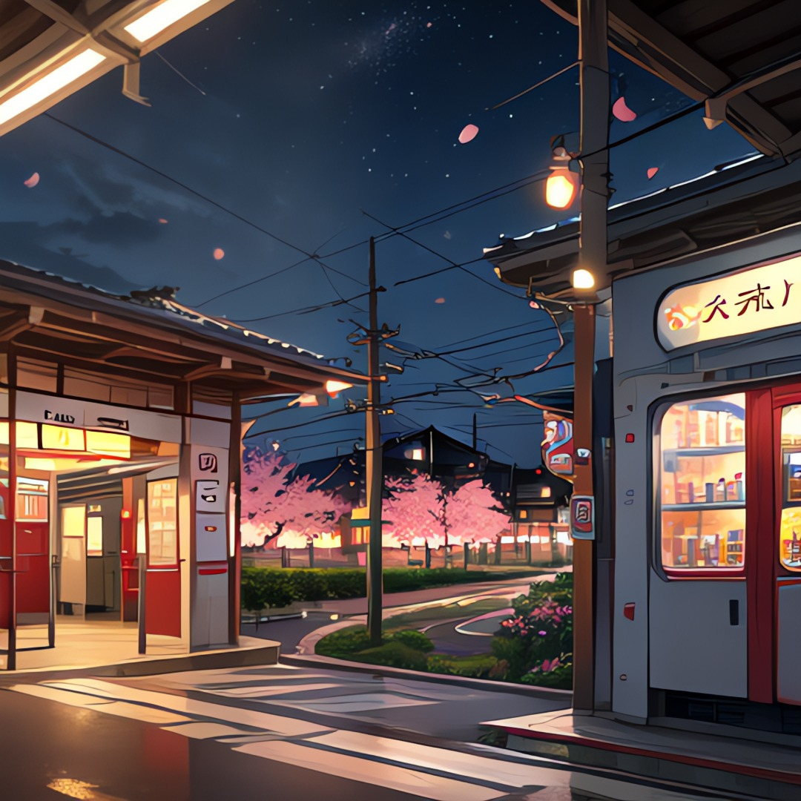

All 5 Curated Hugging Face Models · 1080p & 16:9 Full HD · Real-ESRGAN Anime v3
Scenic & Widescreen Gallery
From Makoto Shinkai aurora skies to Studio Ghibli coastlines and Kyoto sakura canals — every landscape below was generated and AI-upscaled to 1080p Full HD directly on a PS4 Pro GPU in Quiet mode.
16:9 Full HD Widescreen Wallpapers (1920×1080)
Generated at native 16:9 (1024×576) and upscaled to 1920×1080 on the PS4 Pro GPU with Real-ESRGAN Anime v3 in 68 seconds. Click any wallpaper to view full size.




Native Portrait & SD 1.5 1080p Scenic Comparison
Comparing native 1024×1344 SDXL environments against fast 512×512 → 1080×1080 SD 1.5 landscapes:


Recorded Scenic & 16:9 Benchmarks (PS4 Pro Neo)
| Scene / Model | Arch | Gen → Output | Steps / CFG / Sampler | Power Mode | UNet GPU | TFLOPS | VAE | 1080p Upscale | Rest | Total Time |
|---|---|---|---|---|---|---|---|---|---|---|
| MeinaMix V11 8-Step (Twilight Station) | SD 1.5 | 512×512 → 1080×1080 | 8 · CFG 3.5 · Euler | Quiet | 21.6s | 0.60 TF | 12.9s | 7.3s | 11.7s | 50.9s |
| WAI-Illustrious v14 DMD2 (16:9 Aurora Cabin) | SDXL | 1024×576 → 1920×1080 | 4 · CFG 1.0 · LCM | Quiet | 20.9s | 0.70 TF | 23.0s | 17.1s | 17.3s | 68.0s |
| WAI-Illustrious v14 DMD2 (16:9 Sakura Canal) | SDXL | 1024×576 → 1920×1080 | 4 · CFG 1.0 · LCM | Quiet | 20.9s | 0.70 TF | 23.0s | 17.1s | 17.3s | 68.0s |
| Plant Milk Walnut DMD2 (16:9 Coastal Village) | SDXL | 1024×576 → 1920×1080 | 4 · CFG 1.0 · LCM | Quiet | 20.9s | 0.70 TF | 22.9s | 17.1s | 17.3s | 68.0s |
| WAI-Illustrious v17 DMD2 (16:9 Sky Sanctuary) | SDXL | 1024×576 → 1920×1080 | 4 · CFG 1.0 · LCM | Quiet | 20.9s | 0.70 TF | 23.0s | 17.1s | 17.3s | 68.2s |
| WAI-Illustrious v17 DMD2 (Sakura Sky Castle) | SDXL | 1024×1344 Native | 4 · CFG 1.0 · LCM | Quiet | 58.6s | 0.63 TF | 53.6s | — | 12.8s | 119.3s |